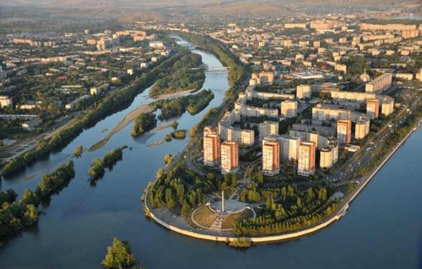
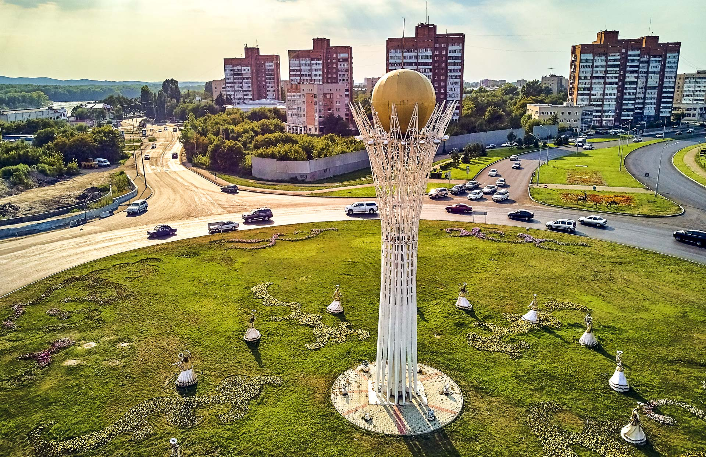
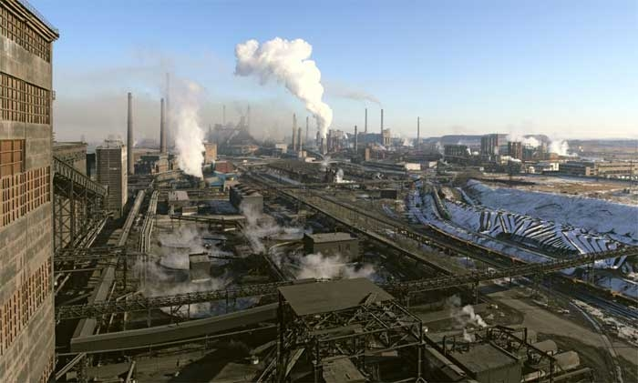

The city was founded in 1720 at the confluence of the Irtysh and Ulba rivers as a fort and trading post named Ust-Kamennaya. It was established according to the order of the Russian Emperor Peter the Great, who sent a military expedition headed by major Ivan Vasilievich Likharev in the search of Yarkenda gold. Likharev’s expedition directed up the Irtysh River to Zaysan Lake. There, at the confluence of the Ulba and the Irtysh rivers the new fortress was laid – the Ust-Kamennaya Fortress. The Ust-Kamennaya Fortress appeared on the map of the Russian Empire, the very southern end of the Irtysh line. In 1868 the city became the capital of the Semipalatinsk Oblast. It was the site of Georgy Malenkov's 30-year internal exile, during which he managed a local hydroelectric plant. One of the main industrial enterprises, the Ulba Metal Works (UMW) which produced and still produces uranium products, was kept entirely secret despite it employing thousands of workers. An explosion at the UMW's beryllium production line in 1990 led to the diffusion of a highly toxic beryllium-containing "cloud" over the city. The health effects of this incident are not entirely known, partly because the incident was kept secret by the Soviet authorities.
Follow the link to find more information on History here: History of Oskemen
The city developed into a major mining and metallurgical center during the Soviet period. Processing of non-ferrous metals, especially uranium, beryllium, tantalum, copper, lead, silver and zinc remain important. It is a center for the construction industry producing manufactured housing and ferroconcrete articles. The post-war industrial history of the city is very closely intertwined with the Soviet nuclear bomb project, and the city was therefore kept closed to outsiders. The number of enterprises in Oskemen is very high relative to the number of people living there. There are about 169 firms according to the data from 2002. Most of them are industrial firms, working in mining and processing of raw materials, mostly heavy metals. Kazzinc is a major fully integrated zinc producer with considerable copper, precious metals and lead credits. The company was established in 1997 through the merger of Eastern Kazakhstan's three main non-ferrous metal companies - Ust-Kamenogorsk Lead and Zinc Combinate, Leninogorsk Polymetallic Combinate and Zyryanovsk Lead Combinate. The company continues to develop seeking to have its stable position among the world's five lowest cost zinc producers. Apart from zinc it produces on a large-scale lead, silver, copper, and many more. Titanium-Magnesium plant specializes in production and selling nonferrous metals. Ulba metallurgical plant produces hi-tech uranium, beryllium and tantalum products for the needs of atomic engineering, electronics, metallurgical and other spheres of operation. The company is among the leaders in production of their specific goods. Apart from the mining and processing companies, there are numerous thermoelectric power stations and about five hydropower plants concentrated around the Ust-Kamenogorsk region of Eastern Kazakhstan. The highest lock in the world is the Oskemen Lock[14] and lies at Ablaketka where it allows river traffic to pass around a hydroelectric dam on the Irtysh river. It has a drop of more than 40m. A new car plant owned jointly by AvtoVAZ and Azia Avto, which will produce 120,000 cars a year, will be opened in 2016.
Find out more about investment opportunities in Oskemen: Investments
As expected in a city with a lot of heavy industry, the atmosphere of the city holds the by-products of the heavy metals production: nitrogen dioxide, sulfur dioxide, Zn, Cd, Cl, As, C, Be, phenol, benzol, NaOH, NH3, radioactivity etc. in general there are about 170 polluting components found in the city. There are 3 impact points that are influenced in Oskemen. The atmosphere is hit most. With a poor urban ventilation (the average percentage of calm 48%), with a large number of vehicles and stationary sources relevance of air pollution in Oskemen is not in doubt. The concentration of harmful substances in the air is increasing each year because of the nature of the companies which are looking for increases in the production and profits. As usual, the pollution is enhanced by the low quality of car fuels and an increase in the number of cars. As a result of all this, Oskemen is often recognized as one of the most polluted regional centers of Kazakhstan. The most polluted rivers of the Republic are those flowing through the territory of the East Kazakhstan region, where the highest index of surface water pollution is observed in the mining areas and enrichment of polymetallic ores. Mostly the water is affected through the industrial wastes and the storages of waste. Contamination of the water with lead, selenium, cadmium, nitrates spreads on many kilometers as a consequence of which a few drinking water intakes in the Western part of the city are closed or to be closed. The soil close to the industry territories holds the solid wastes of the firms and becomes less suitable for planting. An increasing number of industrial waste requires a large area for the storage of waste. As a result of large production of uranium and presence of other radioactive elements such thorium, radon or radioactive dust the radioactive background of the city is remarkable with the zones of radioactive anomaly which are spread around the city. Oskemen is known to be the leader in Kazakhstan by the number of people having respiratory problems and the diseases of immune system. The statistics show that the most frequent diseases are respiratory diseases and urogenital system diseases. In the last years, the number of people having cancer has been also increasing.

You can plan your visit to Oskemen here: Visit Kazakhstan. We are waiting for you!